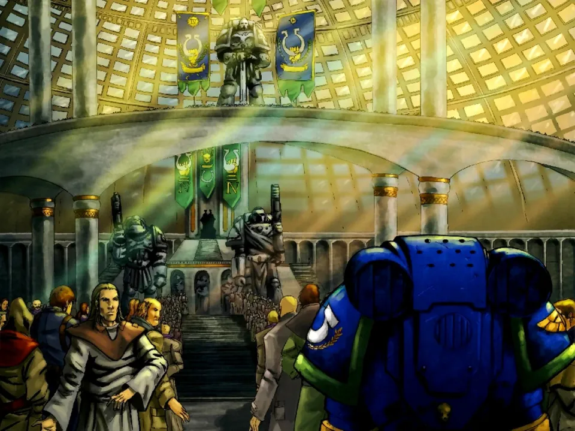
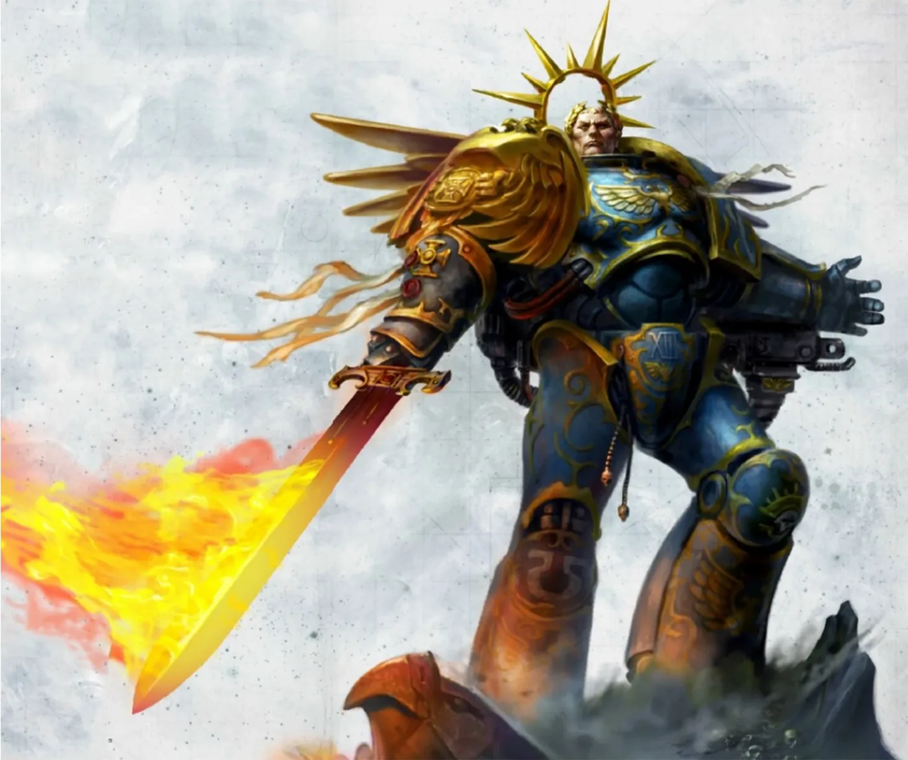
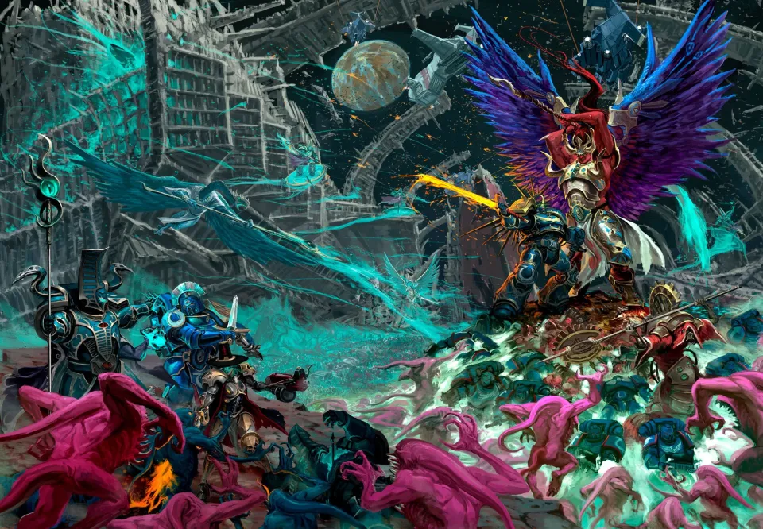
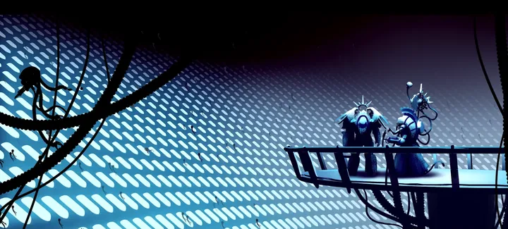
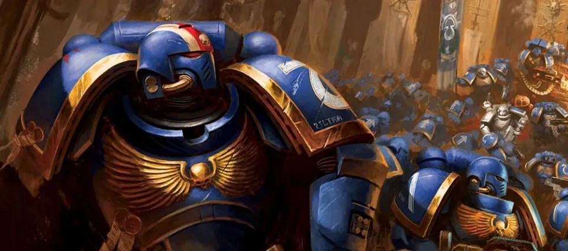
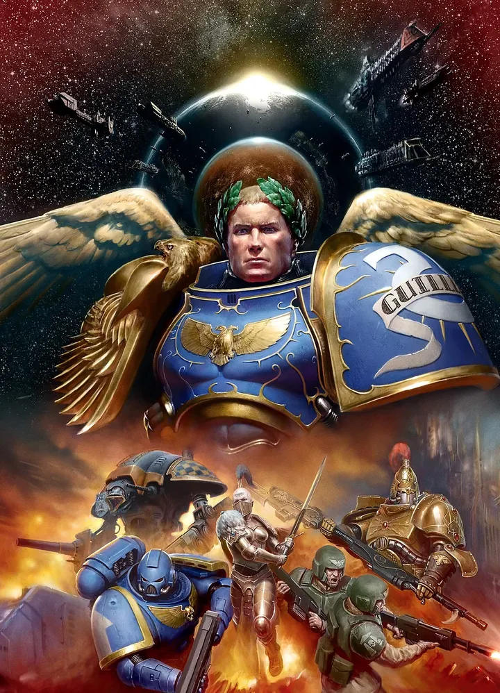
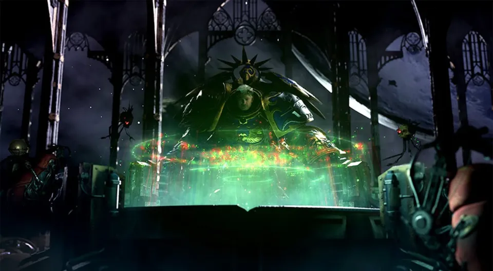
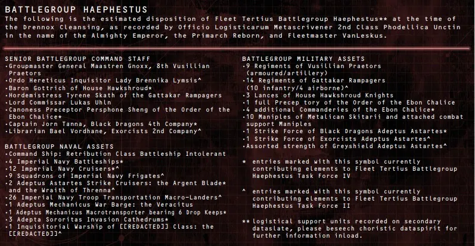
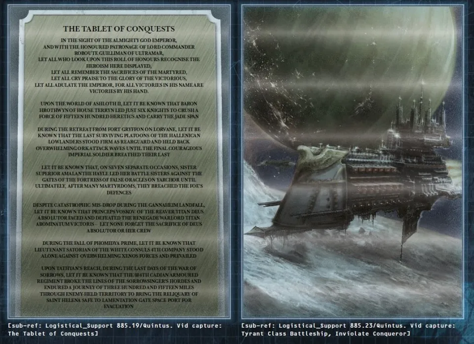

01ภาพรวม
เมื่อ Cadia ล่มและ Great Rift ผ่ากาแล็กซี จักรวรรดิต้องการปาฏิหาริย์ — และมันก็มาในรูปของ Roboute Guilliman Primarch ของ Ultramarines ที่ฟื้นคืนชีพหลังหลับใหลมาหมื่นปี เขานำ Indomitus Crusade (อินโดมิตัส ครูเสด) สงครามครูเสดที่ใหญ่ที่สุดนับตั้งแต่ Great Crusade และยุคที่ตามมาก็ถูกเรียกว่า Era Indomitus
02การฟื้นคืนชีพของ Guilliman
หลัง Great Scouring Guilliman ถูก Fulgrim แทงด้วยอาวุธอาบพิษ ร่างของเขาถูกเก็บในสนามหยุดเวลาที่ Temple of Correction บน Macragge นับหมื่นปี ทุกคนเชื่อว่าเขาไม่มีวันฟื้น
ผู้รอดชีวิตจาก Cadia — Saint Celestine, Inquisitor Greyfax และ Archmagos Belisarius Cawl — ร่วมมือกับ Yvraine แห่ง Ynnari ผู้รับใช้เทพแห่งความตายของ Aeldari พวกเขาฝ่าเข้าไปยัง Macragge Cawl สร้างชุดเกราะ Armour of Fate ที่จะพยุงร่างของ Primarch ไว้ ส่วนพลังของ Ynnead ช่วยดึงวิญญาณของเขากลับมา Guilliman ลืมตาขึ้นหลังหมื่นปี — และพบว่าจักรวรรดิที่เขาช่วยสร้างกลายเป็นสิ่งที่เขาแทบจำไม่ได้


03Terran Crusade: เดินทางสู่ Terra
Guilliman รวบรวมกองกำลังจากหลาย Chapter, Sisters of Battle, Astra Militarum, Inquisition และ Mechanicus ออกเดินทางสู่ Terra ท่ามกลางพายุ Warp ที่ก่อตัว การเดินทางนี้เรียกว่า Terran Crusade
เมื่อถึงดวงจันทร์ Luna Magnus the Red และ Thousand Sons ดักรอเพื่อหยุดไม่ให้ Guilliman ถึง Terra Guilliman นำผู้รอดชีวิตพร้อมกำลังเสริมจาก Terra สู้จนชนะ จากนั้นเขาเข้าไปในห้องบัลลังก์ของจักรพรรดิ ไม่มีใครรู้ว่าเกิดอะไรขึ้นในนั้น แต่เมื่อออกมา Guilliman มีเป้าหมายที่ชัดเจน และ High Lords แต่งตั้งเขาเป็น Lord Commander of the Imperium

ไม่กี่วันต่อมา เมื่อความมืดของ Noctis Aeterna มาถึง Terra ปีศาจของ Khorne บุกประตู Lion's Gate ของพระราชวัง Guilliman กับ Captain-General Trajann Valoris แห่ง Custodes นำการตีกลับด้วยตัวเอง
04Primaris Space Marine: อาวุธลับหมื่นปี
ก่อนหายไปหมื่นปี Guilliman เคยสั่ง Belisarius Cawl ให้พัฒนา Space Marine รุ่นใหม่จาก gene-seed ของ Primarch ที่เก็บไว้ Cawl ทำงานนี้อย่างลับ ๆ ใต้ดาวอังคารตลอดหมื่นปี ผลคือ Primaris Space Marine ที่ตัวใหญ่ แข็งแรง และมีอวัยวะเสริมใหม่สามชิ้น นักรบหลายพันนายรออยู่ในสนามหยุดเวลา
การปลุก Primaris ทั้งหมดขึ้นมาพร้อมกันเรียกว่า Ultima Founding — การก่อตั้ง Chapter ใหม่ครั้งใหญ่ที่สุดในประวัติศาสตร์ ทั้ง Chapter ใหม่ล้วน และทหารเสริมให้ Chapter เก่าที่บอบช้ำ ต่อมายังมีพิธี Rubicon Primaris ที่ให้ Space Marine รุ่นเก่าข้ามไปเป็น Primaris ได้ (แม้จะเสี่ยงตาย)


05กองเรือแห่งการแก้แค้น
แทนที่จะรีบนำทัพไปช่วยดาวที่ใกล้ที่สุด Guilliman อดทนรวบรวมกำลังทั้งหมดก่อน — "ถ้าเสียมุมมองภาพรวมแม้เพียงครั้งเดียว อาจชนะได้ไม่กี่ศึกแต่แพ้ทั้งสงคราม" เขารวบรวมเรือทุกลำที่หาได้นอกวงโคจรของดาวเนปจูน และแบ่งเป็นกองเรือหลักหลายกอง (Fleet Primus, Secundus, Tertius และต่อไป) แต่ละกองแบ่งเป็น Battle Group ที่มีทั้ง Space Marine, Astra Militarum, Sisters of Battle, Mechanicus, Knight และ Inquisition ทำงานร่วมกัน
รูปแบบการรบ
กองเรือเคลื่อนที่ไปช่วยดาวที่ถูกปิดล้อม ทำลายศัตรู ตั้ง "Hub-Fortress" เป็นฐานส่งกำลัง แล้วเดินหน้าต่อ ทิ้งทหารไว้ป้องกันและสร้างจักรวรรดิใหม่ขึ้นทีละภาค
ศัตรูทุกทิศ
ไม่ใช่แค่ Chaos — Ork, Tyranid, Drukhari, T'au และ Necron ต่างฉวยโอกาสตอนจักรวรรดิอ่อนแอ ไม่มีดาวใดที่ไม่มีสงคราม




06ศึกสำคัญใน Era Indomitus
Devastation of Baal
กองเรือของ Indomitus Crusade มาช่วย Blood Angels ที่ถูก Hive Fleet Leviathan ล้อม → อ่านเต็ม
Armageddon
กองกำลังที่นำโดย Salamanders หยุดพิธีกรรมที่จะนำ Angron กลับมาบน Armageddon → อ่านเต็ม
ศึก Raukos — จบระยะแรก
หลังราว 12 ปี ระยะแรกของสงครามครูเสดจบลง Guilliman จัดพิธีสวนสนามและกระจาย Chapter ใหม่ไปทั่วจักรวรรดิ
Vigilus และ Nachmund Gauntlet
ศึกแย่งเส้นทางผ่าน Great Rift ที่ดาว Vigilus กับ Ork, Genestealer Cult และ Black Legion
07จักรวรรดิในมือ Guilliman
- Codex ฉบับปรับปรุง — Guilliman ปรับ Codex Astartes ให้รองรับ Primaris และสงครามยุคใหม่ ดู Codex Astartes
- การเมืองบน Terra — High Lords หลายคนไม่พอใจที่อำนาจถูกลด บางคนกล่าวหาว่า Guilliman ต้องการเป็นจักรพรรดิองค์ใหม่
- Primarch ในจักรวรรดิที่ศรัทธา — Guilliman ผู้เคยเชื่อใน Imperial Truth ต้องนำจักรวรรดิที่บูชาบิดาของเขาเป็นพระเจ้า เขาไม่ชอบมัน แต่รู้ว่าศรัทธาคือสิ่งที่ทำให้มนุษย์ยังสู้
- สงครามยังไม่จบ — Imperium Sanctus ถูกพยุงไว้ได้ แต่ Imperium Nihilus อีกฝั่งยังมืด และ Commander Dante ต้องดูแลอีกฝั่งแทนเขา
08แหล่งข้อมูลและหมายเหตุ
เนื้อหาหน้านี้สรุปและแปลเป็นภาษาไทยจากบทความใน Warhammer 40k Wiki (Fandom) ซึ่งเรียบเรียงจากหนังสือ Codex, หนังสือชุด Horus Heresy ของ Forge World และนิยาย Black Library ด้านล่างนี้ (ตรวจสอบ ต.ค. 2026)
เนื้อเรื่อง Warhammer ถูกเขียนเพิ่มและแก้ไขมาตลอดหลายสิบปี ปี จำนวน และรายละเอียดบางจุดต่างกันไปตามหนังสือแต่ละเล่ม หน้านี้ใช้ฉบับที่แหล่งอ้างอิงส่วนใหญ่ยอมรับ และบอกไว้เมื่อมีหลายฉบับ